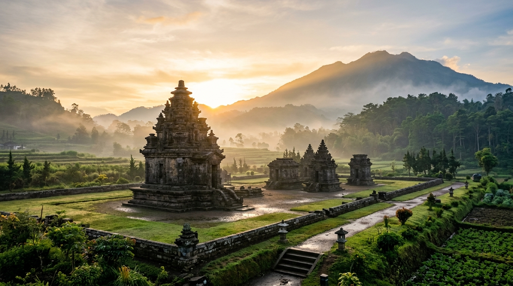

01 — Awal Fajar Peradaban Jawa
Fajar Peradaban & Kerajaan Awal Jawa Tengah
± Abad ke-4 – ke-7 M
Di dataran vulkanik subur Jawa Tengah, peradaban agraris dan spiritual mulai bersemi. Sebelum kemegahan candi-candi raksasa Mataram Kuno, masyarakat kuno Jawa telah mengembangkan sistem irigasi, kepercayaan kosmologis, dan pertukaran maritim dengan India serta Tiongkok melalui pesisir utara.
Konteks Sosio-Kultural & Geografis
Peradaban tertua berpusat di lereng pegunungan seperti Dieng dan Gunung Wukir. Pertemuan antara animisme Jawa kuno dan kebudayaan Hindu-Buddha melahirkan dialektika religi unik yang tercermin dalam arsitektur batu paling purba di Nusantara.
Peristiwa Bersejarah Penting

Pusaka Arsitektur Abad ke-7 M
Kompleks Percandian Dieng
Kabupaten Banjarnegara & Wonosobo